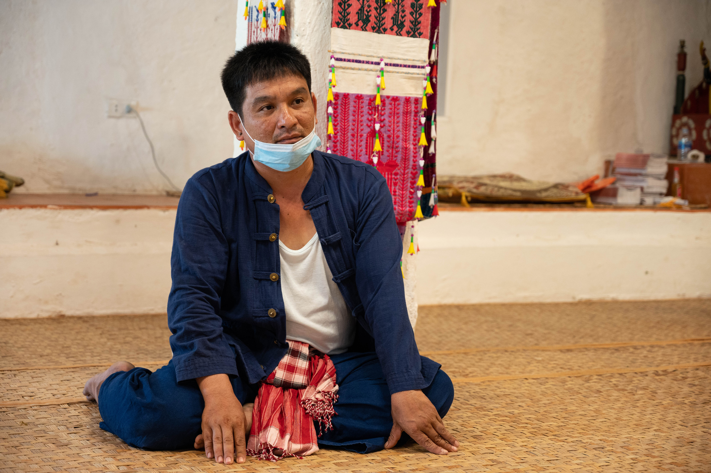
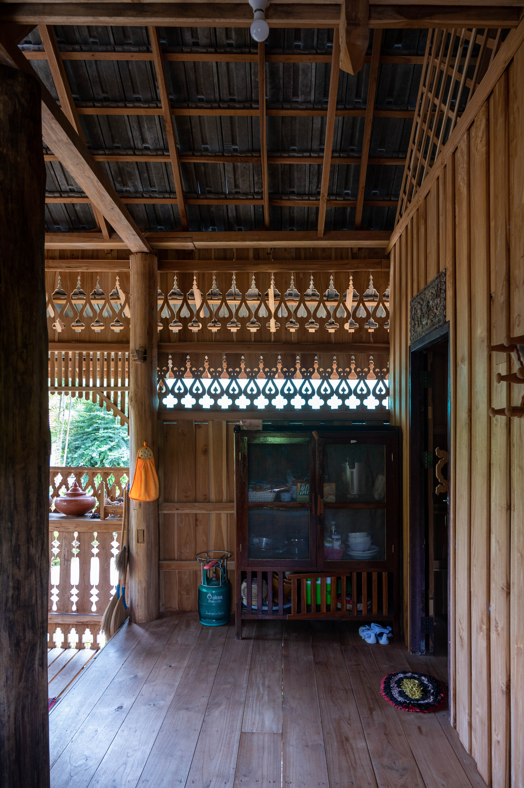
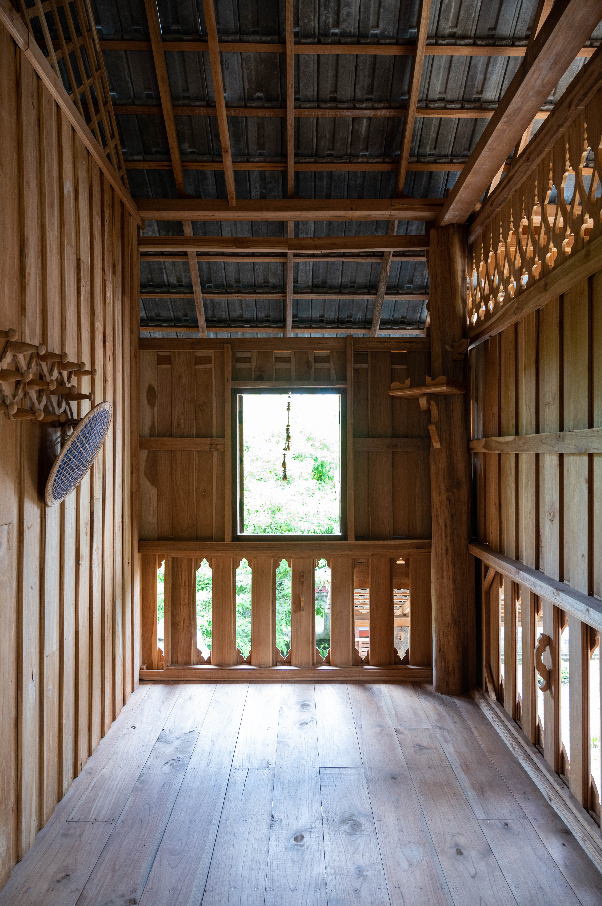

สล่าจิต
นายสมจิต นันทิศ
สล่า-เรือน
จังหวัดน่าน

พระสล่าจิตในช่วงนั้น จึงขอเรียนรู้และขอความร่วมมือคุณตา ทูล สร้างเรือนโบราณวัดบ้านคัวะ (ผลงานเรือนที่ 1) ไว้ที่วัด 1 หลัง โดยใช้ไม้ที่ไม่แข็งแรง เช่นไม้มะพร้าว (โครง) ไม้หมาก (พื้น) ไม้ไผ่ (ฝา) หญ้าคา (หลังคา) คุณตาสล่าก็สอนวิธีการวางผัง การดูสัดส่วนของเรือน เมื่อสร้างเสร็จก็สามารถใช้ได้จริง

ครั้นเจ้าอาวาสวัดสวนหอม (เพื่อน) ขึ้นมาเที่ยวหา ตามปกติ ได้พบเจอเรือนไม้วัดบ้านคัวะ (วัดพุ่มมาลา) เกิดความสนใจ และอยากสร้างไว้ที่วัดสวนหอมซักหลัง แต่ในขณะนั้นไม่มีงบและวัสดุในการสร้าง
ผ่านมาหลายปีจนสล่าจิตศึก และเริ่มมีวัสดุในการก่อสร้าง จึงเริ่มออกแบบและสร้างเรือนกาแลโบราณที่วัดสวนหอม (ผลงานเรือนที่ 2) โดยมีสล่าคุณตาทูลร่วมงานด้วย สล่าจิตเป็นผู้นําในการสร้าง ขึ้นโครงและมุงหลังคา ทําแบบพื้นบ้านและเจ้าอาวาสก็ตกแต่งเอง

หลังจากนั้นสล่าจิตก็กลับมาอยู่บ้านท่าวังผา รับงานทั่วไป ตกแต่งบ้านเรือน จากที่เคยได้สร้างเรือนโบราณตามวัด หลวงพ่อวัดหนองบัวก็ได้เรียกเข้าไปคุย เนื่องจากมี ความประสงค์อยากสร้าง เรือนไม้โบราณวัดหนองบัว (ผลงานเรือนที่ 3) เพื่อเป็นตัวอย่างเรือนโบราณ หอผ้า และที่รับรองแขก ประกอบไปด้วยห้องนอน เติ๋น ชาน สล่าจึงดูพื้นที่ และคํานวนไม้คร่าวๆ ในการสร้าง หลวงพ่อจึงหาไม้มาให้ใช้ระยะเวลาประมาณ 1-2 เดือน
“ในทางเหนือเวลามีงานศพ ก็จะมีหอผ้าทําทาน หลวงพ่อเจ้าอาวาสวัดหนองบัว จึงอยากได้เรือนรับรอง 1 หลัง เพื่อ ทําประโยชน์แก่กิจกรรมภายในได้หลากหลาย เช่น หอผ้าทําทาน, ต้อนรับพระอาคันตุกะ และเพื่อให้นักท่องเที่ยวมาดูเรือนที่มี กลิ่นอายของไทลื้อ พื้นเมืองล้านนา”